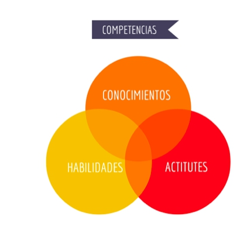

Competencias
Las competencias son conocimientos y habilidades que tiene una persona. Estas son diferentes en cada uno y son necesarias para desarrollarse en cualquier tipo de trabajo o actividad.
Estas pueden ser divididas en varias categorias como: competencias basicas, ciudadanas y laborales. Las competencias transversales son aquellas comunes o genericas a la mayoria de profesiones.
Mas Información